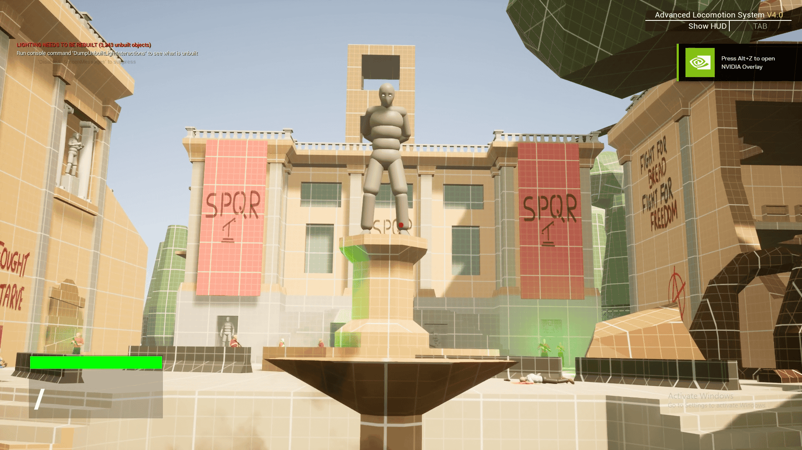
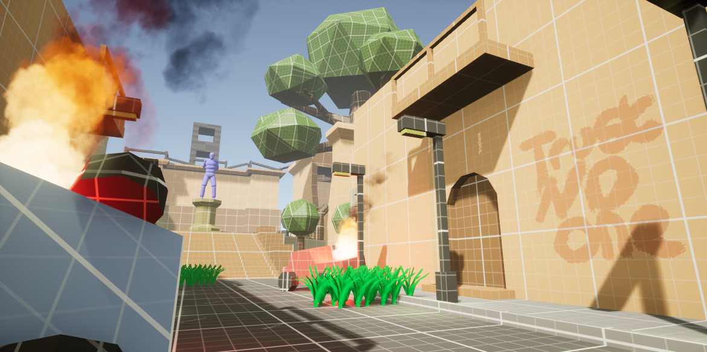
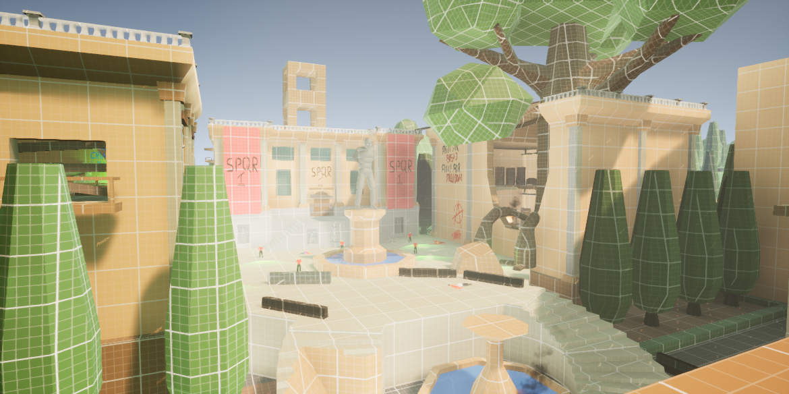
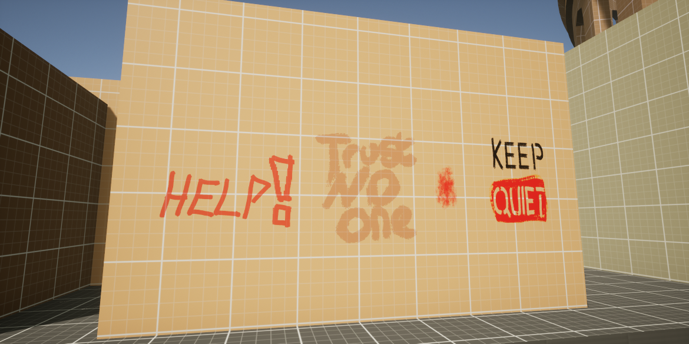
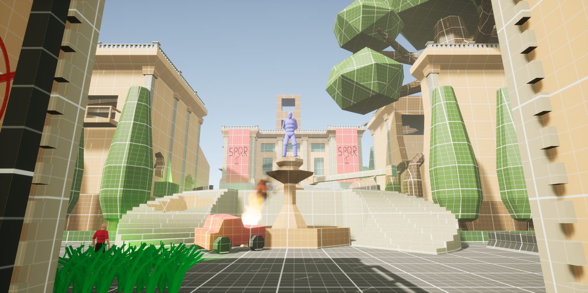
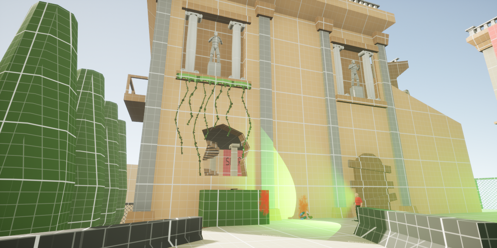

Level Design — Environmental Storytelling
Post-Apocalyptic Rome
A level design case study focused on environmental storytelling, player flow, stealth and composition within a ruined Roman city.
Overview
Post-Apocalyptic Rome is a level design project developed around environmental storytelling and stealth gameplay. Set within a ruined and overgrown Roman city, the level uses verticality, exploration and visual composition to guide the player while communicating the story through the environment. Developed as a paired project, the focus was on Level 1, with responsibility for its layout, pacing, stealth encounters, environmental storytelling and visual direction. The level was iterated through playtesting to improve player flow, clarity and exploration.
"The environment was designed to communicate the story, guide the player and create opportunities for exploration without relying on explicit direction."
Gameplay Walkthrough
Walkthrough of the finished level, showcasing player flow, exploration, stealth encounters and environmental storytelling.
Level Flow
A visual walkthrough of the player experience, showing how environment layout, landmarks and encounters shape progression through the level.





Technical breakdown
A closer look at the level design, environmental storytelling, composition and iterative development of the environment.

Level Design & Player Flow
The level was structured around a series of connected spaces, using verticality, alternate routes and environmental landmarks to control progression and encourage exploration. Early playtesting identified issues with optional routes causing players to miss key areas. The layout was subsequently refined to create a clearer progression while retaining opportunities for exploration. The Colosseum was positioned as a central focal point, helping establish the overall structure and direction of the level.

Environmental Storytelling
Environmental storytelling was used to communicate the narrative without relying on cutscenes or constant dialogue. Ruined architecture, foliage, debris, graffiti, props and environmental details were used to communicate the collapse of the city and the growing rebellion. Diegetic elements such as “Stay Quiet” graffiti also communicated gameplay information while remaining part of the world.

Composition & Environment
Composition was used to establish focal points, frame player movement and create a strong visual hierarchy throughout the level. Ruined Roman architecture was contrasted with overgrown vegetation, debris and controlled lighting to create visual interest while reinforcing the setting. Environmental elements were also positioned to naturally guide the player through spaces, combining visual composition with navigation and gameplay readability.

Playtesting & Iteration
The level was developed through repeated playtesting and iteration. Feedback identified issues with route clarity, puzzle pacing and player progression, leading to changes in the level layout, environmental cues and gameplay spaces. Visual indicators such as banners, foliage and environmental landmarks were introduced or repositioned to improve navigation without relying on explicit instructions. This iterative process helped balance exploration, stealth, narrative and player readability.
Level Breakdown
A deeper breakdown of the level's blockout, player flow, points of interest and environmental decisions supporting gameplay.